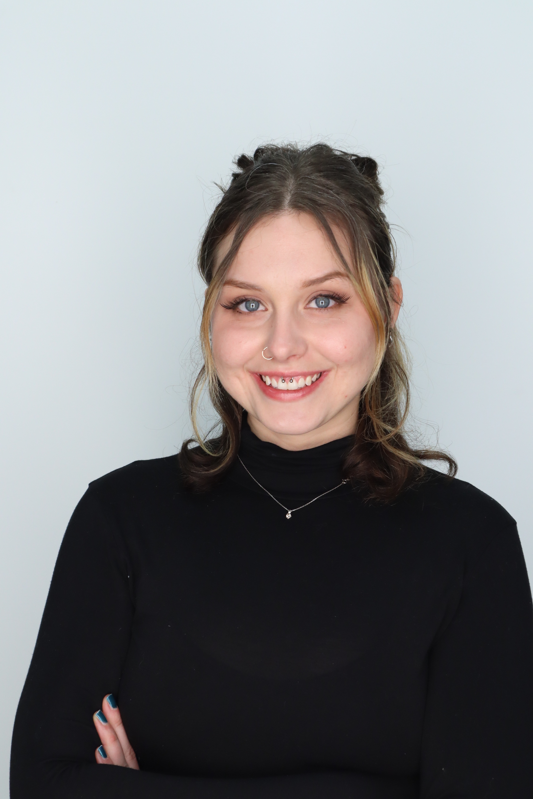
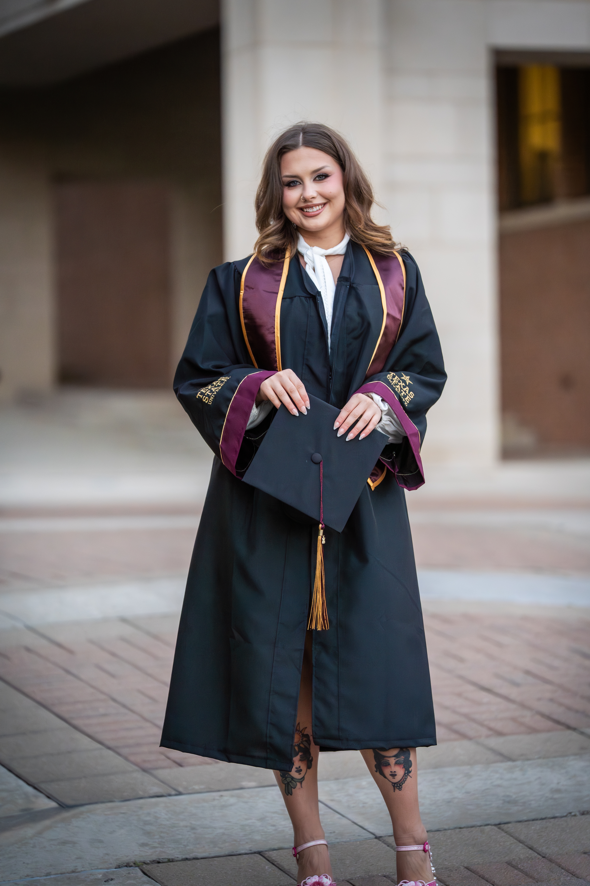
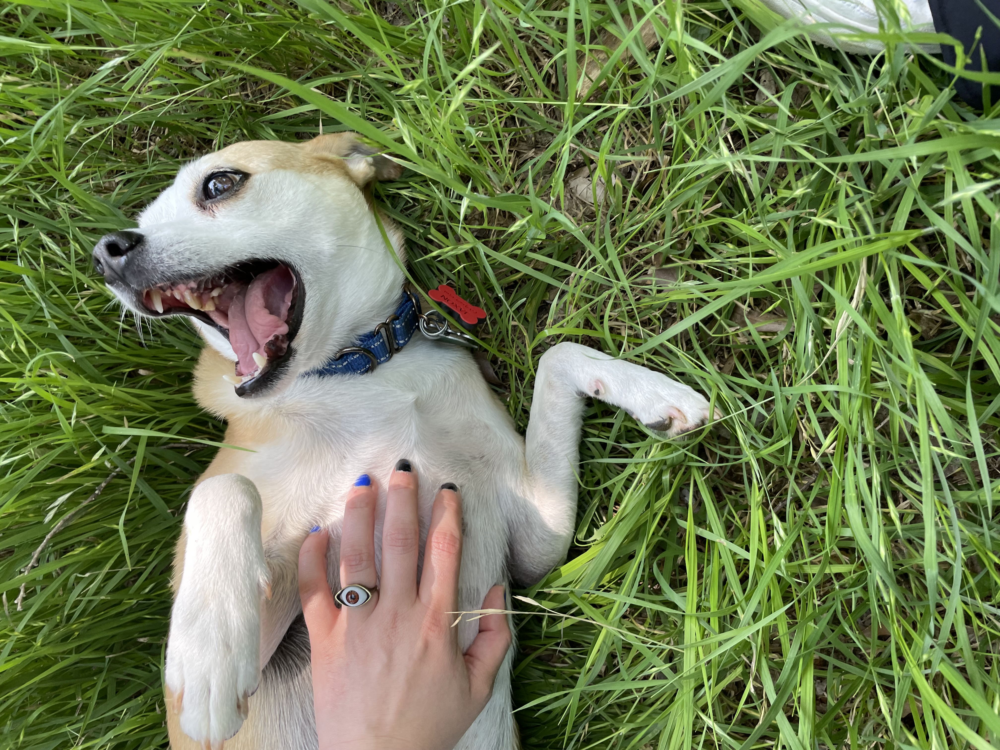

Hi, I’m Sloan.
I’m an Electrical Engineering and Applied Mathematics graduate from Texas State University with hands-on experience in hardware systems, signal analysis, and embedded development through project-based and research work. I’m motivated by design-driven engineering problems and enjoy using creative problem solving to optimize performance, reliability, and efficiency in complex systems.
This site is a quick way to explore my work. If you’re here from a QR code, start with Projects.
See Projects → Resume →Highlights
- Foundation Monitoring System: multi-sensor displacement tracking + UI pipeline
- Space Lab / HAB: custom scatter detector + constraints-driven design
- VLSI: 8-bit adder layout + verification

Experience
My engineering experience spans embedded systems, sensor integration, signal processing, VLSI and digital design, PCB development, controls, and data analysis. I have worked with IMUs, time-of-flight sensors, pulsed coherent radar (PCR), environmental sensors, and microcontroller-based systems, with experience across both hardware integration and software-side data processing.
For Texas State Space Lab, I worked on a high-altitude balloon (HAB) project involving the design and validation of a scatter detector chamber and custom PCB for measuring CO₂ concentration in ambient air. The system integrated analog circuitry, photodiode sensing, and embedded hardware while operating under strict power, mass, and environmental constraints.
My senior design project focused on a multi-sensor foundation monitoring system designed to detect small shifts in a home's foundation. I served as project manager and led the data processing work, including sensor evaluation, data filtering, testing, analysis, documentation, and cross-subsystem coordination. The project used MQTT-based communication and Python/Jupyter-based data processing to evaluate sensor performance and improve measurement reliability.
I have also completed projects involving VLSI and digital circuit design, including the design and simulation of an 8-bit full adder, as well as PID control and system response analysis. These projects provided experience with digital logic, transistor-level design, circuit simulation, feedback systems, and performance evaluation.
In signal processing and machine learning, I have applied Python-based methods to IMU and PCR datasets for noise characterization, feature extraction, filtering, and data-driven analysis. I also completed a semester-long research project on Fourier series, focused on signal decomposition and frequency-domain behavior in physical measurement systems.
About Me
I started working in hairstyling at 17 and have been with LoLa Beauty for 13 years, specializing in wedding and event styling. Working in a client-facing industry taught me how to manage pressure, solve problems quickly, coordinate with others, and be dependable.
After several years in the industry, I decided to change careers and return to school as a non-traditional student. I started at community college without knowing exactly what I wanted to pursue. After taking business calculus, I found that I enjoyed the math and problem-solving aspects of my coursework and began looking into fields that would allow me to build on those interests. That led me to Electrical Engineering.
I worked full-time throughout college and paid for my education out of pocket. I completed my degrees without student loans while balancing work, school, and engineering projects.
Outside of engineering, I enjoy traveling, paddle boarding, painting, weightlifting, and taking dance classes. I have also traveled to 12 countries and spend a lot of time with my dog, Jaxon, who I rescued as a puppy.

